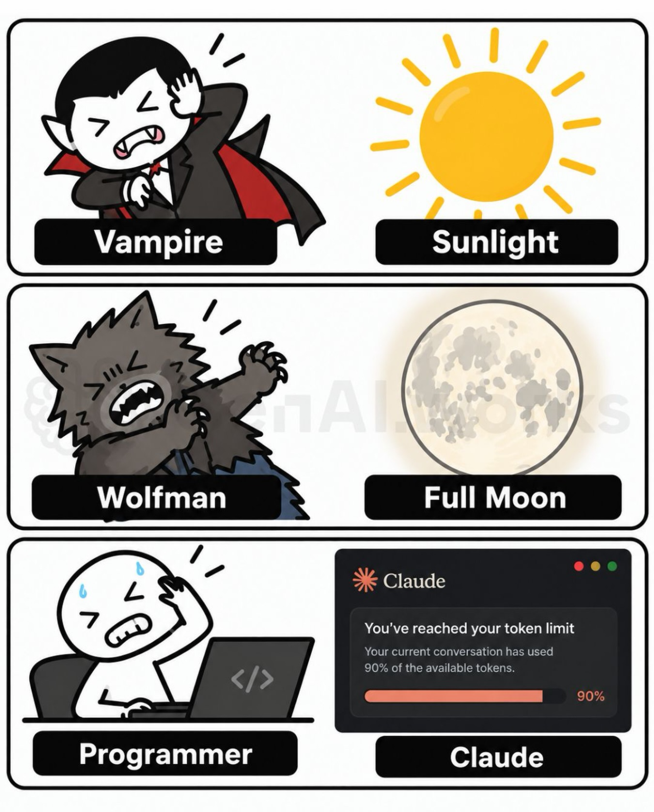

L'escalade continue. REA, pour « Reverse Engineer Anything », branche les agents de code comme Claude Code, Codex ou Cursor sur les outils classiques de la rétro-ingénierie, Ghidra ou IDA. Le dépôt a dépassé les 100 000 étoiles GitHub en moins d'une semaine et frôle aujourd'hui les 325 000, un rythme jamais vu. laforet.dev y voit le début d'un piratage à grande échelle. Prudence · de fausses copies circulent, la seule source officielle est le dépôt morluto/rea.
Jeu vidéo · PS5Pas de code source sous la main ? Des développeurs font désormais de la rétro-ingénierie directement sur le fichier compilé, avec l'aide de l'IA, pour reconstruire le code perdu et porter des jeux PS5 sur PC. Une équipe aurait reconstitué 99 % des fonctions de Call of Duty Modern Warfare 2. Toutes les exclusivités ne tournent pas encore ailleurs, mais la question posée par scroll.engineer fait mouche · achèterait-on encore une console ?
Le vampire craint le soleil, le loup-garou la pleine lune. Le programmeur, lui, a désormais sa propre malédiction · la fenêtre qui annonce que la conversation a consommé 90 % de ses jetons. Une situation que la rédaction vit de plus en plus souvent, en général au moment précis où tout commençait enfin à marcher.

Dans le N°32, une démonstration promettait du motion design piloté par une IA, sans passer des heures dans un logiciel de montage. Nouvelle rubrique, on passe aux travaux pratiques. Voici le résultat · quinze secondes de bande démo en haute définition, animations et typographie comprises, entièrement écrites en code par Claude avec Remotion, sans toucher à un logiciel de montage. À vous de juger.